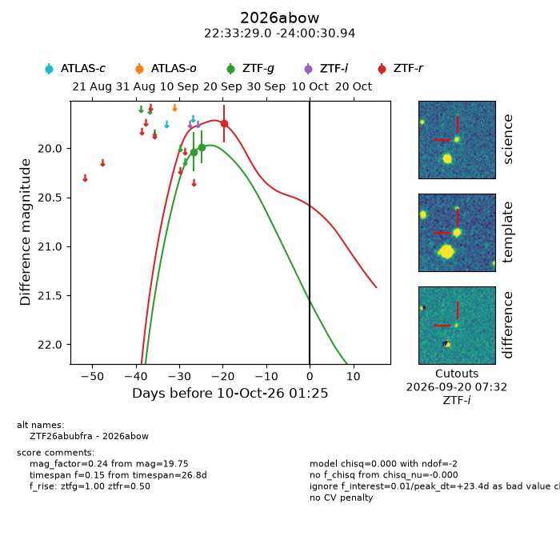
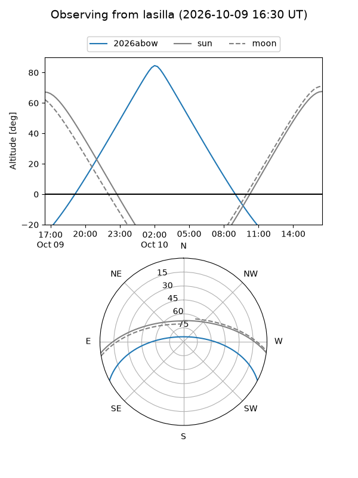
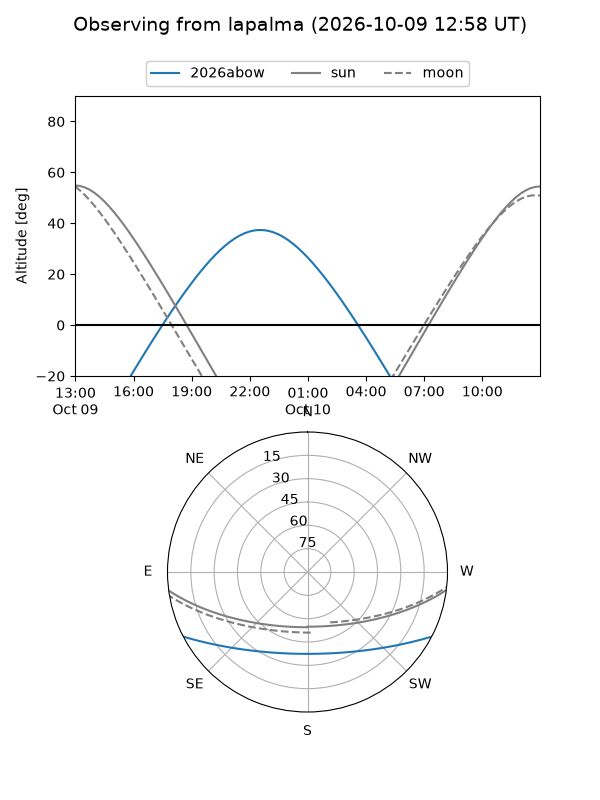
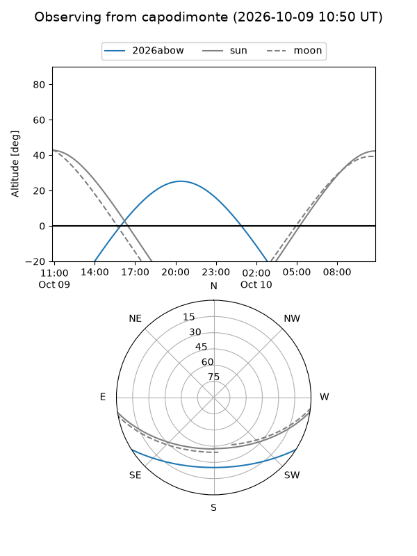
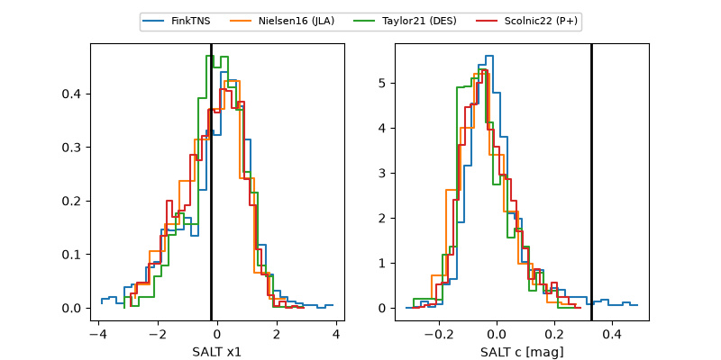

2026abow
Target 2026abow at 2026-10-10 13:26
Aliases and brokers:
FINK-ZTF: ztf.fink-portal.org/ZTF26abubfra
Lasair-ZTF: lasair-ztf.lsst.ac.uk/objects/ZTF26abubfra
ALeRCE-ZTF: alerce.online/object/ZTF26abubfra
YSE-PZ: ziggy.ucolick.org/yse/transient_detail/2026abow
TNS name: wis-tns.org/object/2026abow
Direct TNS query: direct search
alt names
ZTF26abubfra (ztf,fink_ztf)
2026abow (tns,yse)
Coordinates:
equatorial (ra, dec) = 338.3708,-24.00859
equatorial (HMS+DMS) = 22:33:28.98,-24:00:30.94
galactic (l, b) = (30.8515,-58.82885)
Flags:
peak dt: +23.9
Photometry:
last ztfg=19.99, ztfr=19.75
2 ztfg, 1 ztfr detections
Lightcurve

Visibility



Additional plots
